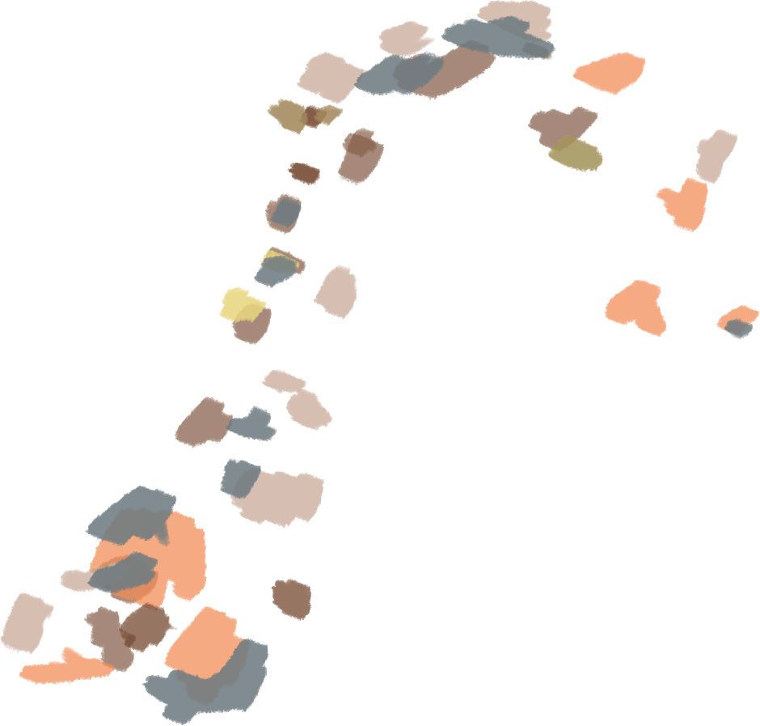

narrow
pathways
difficult
entrances
lack of signage
taboos
misunderstanding
preconceptions
lack of
funding
• Physical
• Sensory
• Cognitive

Accessible spaces are guaranteed by state and federal laws, including
- Rehabilitation Act of 1973
- Americans with Disabilities Act (ADA)
- ADA Standards for Acessible Design - California Civil and Government Code - Hatch Act of 1887 ...and more
One of the most important leaders in the disability rights movement is UC Berkeley alumnus Ed Roberts.
As a pillar for inclusive higher education, the University has a duty to meet accessibility standards, else undermining the expectation of accessibility at other institutions.